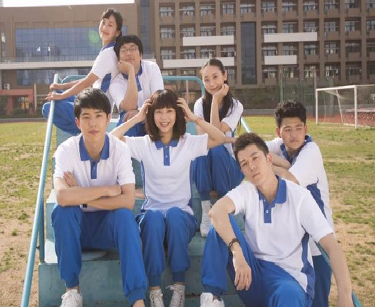

我不知道该怎么样来形容青春比较合适，年轻、自由还是梦想都不足以完整的表达青春，带给我们欢笑，我们梦想，我们自由的日子大概就是青春吧，可我觉得青春更像是一种态度，一个生命中最有特点的一份音符，青春是有声音的，我们的梦想，我们的呐喊，我们春天坐在操场上笑声，秋日奔走在田野里的怒放，都停留在青春的某一个时刻。也停留在我们远去的记忆力，正如我们在祭奠的青春；我们向往着青春、祭奠着青春、怀念着青春，也在浪费着青春。
关于青春的推荐
- 电影推荐：青春派，关于高考时爱情与前途的迷途。
- 电影推荐：那些年我们一起追过的女孩，台湾青春电影。
- 电影推荐：匆匆那年，曾经美好的青春时代有如一场不真实的梦。
- 关于青春的书籍《谁的青春不迷茫》,该书讲述了一个奋斗小青年十年的逆袭人生，从最初的放荡，迷茫，到最后的成长，蜕变，十年的人生经历说短不短，说长不长，却饱含酸甜苦辣，尝尽人间百味。
- 关于青春的书籍《深海里的星星》,讲述了年少时期的友谊和爱情，其中友谊的背叛与真诚，爱情的脆弱与坚持也展现得淋漓尽致。
- 关于青春的书籍《与青春有关的日子》,该书讲述了出生于上个世纪五十年代末，生长在某军队大院的孩子们所经历的青春往事。青春的残酷，少年的轻狂，都会随时间流逝，或许只有真挚的友情和纯真的爱情会永远不变。